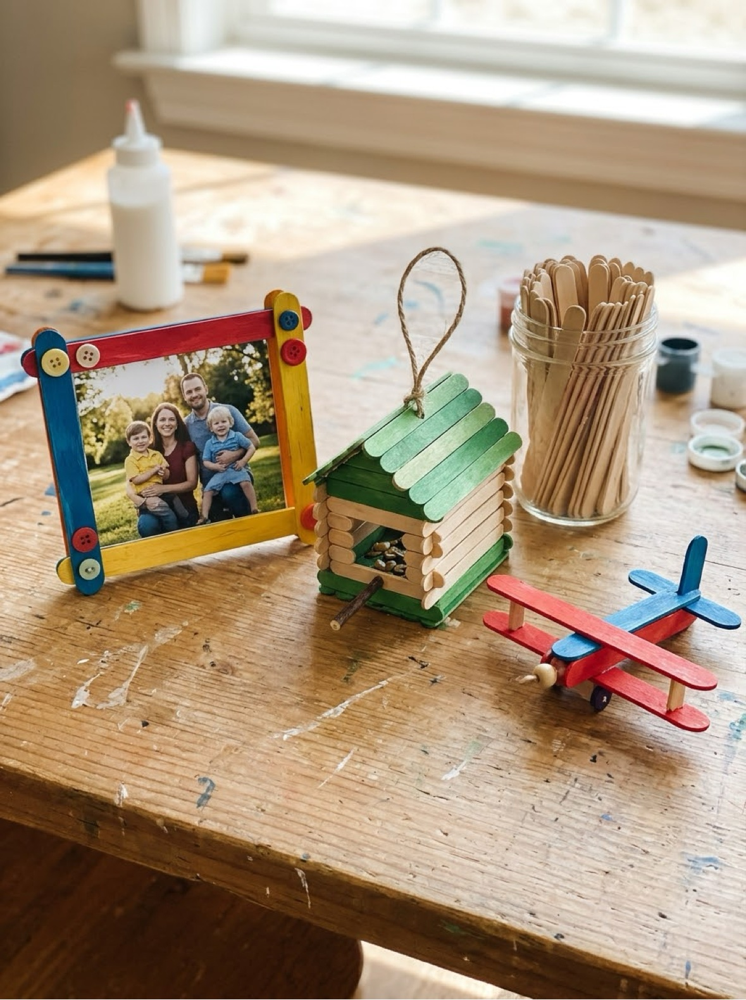
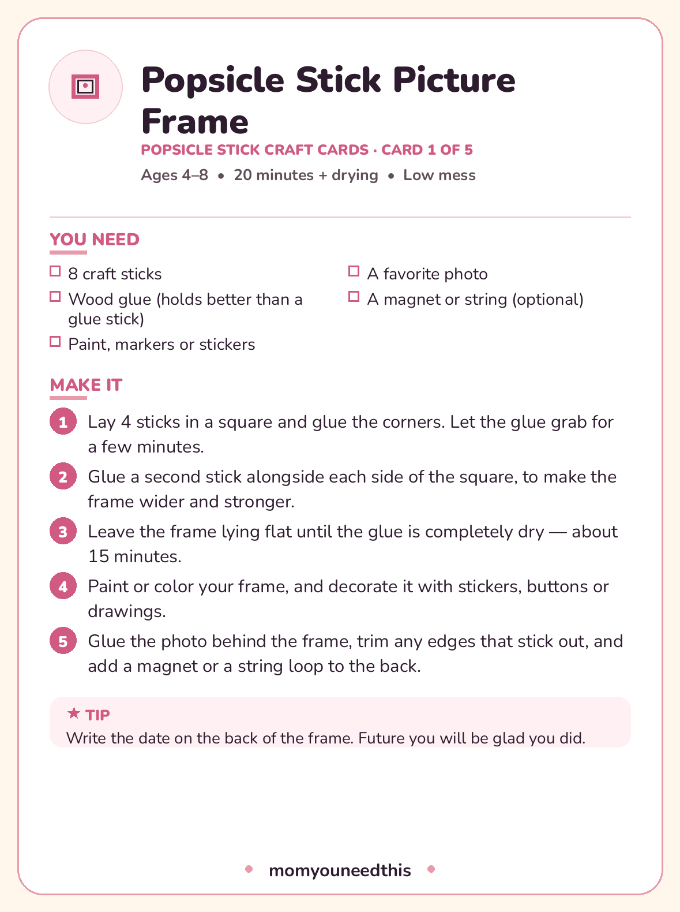

Popsicle Stick Crafts Five builds for ages 4–8 — a frame, a feeder, a puzzle, a plane and a whole log-cabin house
Popsicle stick crafts sit in the sweet spot of kid building: the materials cost almost nothing, the engineering is honest, and a finished project actually does something — holds a photo, feeds a bird, gets flown around the kitchen. These five projects for ages 4 to 8 run from quickest to most ambitious, and each one has a printable card with its materials and steps. Save sticks from ice pops all summer, or buy a bag of craft sticks; both work exactly the same.
Last updated: October 21, 2026

Quick Answer
Five projects: a picture frame (the easiest start), a bird feeder, a stick puzzle, a mini airplane, and a log-cabin house (the weekend build). Everything uses craft sticks, glue and paint or markers, and every project comes with a free printable card. One supply note that matters: wood glue holds far better than a glue stick — that is the detail that decides whether these builds stay built.
At a Glance
- Ages: 4–8
- What you get: 5 projects, plus all 5 as printable project cards in one free PDF
- Glue: wood glue strongly recommended (a glue stick will not hold these)
- Cost: Free — sticks saved from ice pops or one inexpensive craft bag
🖼️ Popsicle Stick Picture Frame
The classic first build, and still the most useful thing in this whole collection — a frame your child made, holding a photo they chose. Eight sticks, some patience while the glue dries flat, and as much decoration as they can fit on four sticks. Grandparents have strong feelings about receiving these.
You need:
- 8 craft sticks
- Wood glue (holds better than a glue stick)
- Paint, markers or stickers
- A favorite photo
- A magnet or string (optional)
- Lay 4 sticks in a square and glue the corners. Let the glue grab for a few minutes.
- Glue a second stick alongside each side of the square, to make the frame wider and stronger.
- Leave the frame lying flat until the glue is completely dry — about 15 minutes.
- Paint or color your frame, and decorate it with stickers, buttons or drawings.
- Glue the photo behind the frame, trim any edges that stick out, and add a magnet or a string loop to the back.
🐦 Popsicle Stick Bird Feeder
This feeder genuinely works, which is the whole thrill of it: build it, hang it where you can see it from a window, and birds arrive. The stacked-stick fence keeps the seed from scattering, and refilling it becomes a small daily job kids take surprisingly seriously.
You need:
- About 15 craft sticks
- Wood glue
- String, about 2 feet (60 cm)
- Birdseed
- Glue 5 sticks side by side to make a flat floor.
- Glue one stick along each edge of the floor to make a low lip, so the seed stays on.
- Stack and glue more sticks around the edge, two or three layers high, like a little fence.
- Tie a piece of string firmly to each corner, and knot the four strings together at the top.
- Let the glue dry completely, fill the feeder with birdseed, and hang it from a branch you can see from a window.
🧩 Popsicle Stick Puzzle
Eight sticks, a strip of tape and one big drawing become a puzzle your child designed themselves — so they always know what the finished picture should look like, and putting it back together is real problem-solving. It packs flat, travels well, and costs nothing.
You need:
- 8–10 craft sticks
- Masking tape
- Markers or paint pens
- Line up 8 to 10 sticks side by side, touching, and stick masking tape across the back to hold them together.
- Flip the sticks over. Draw one big picture across all of them — a rainbow, a face, a house, anything you like.
- Let the ink or paint dry completely, then peel off the tape.
- Mix up the sticks… and put your picture back together!
✈️ Mini Popsicle Stick Airplane
A clothespin fuselage and two sticks make an airplane that actually gets flown around the house at head height making engine noises. The wings go on in minutes; the only grown-up job is cutting one stick in half for the tail. Paint the stripes before assembly — it is three times easier.
You need:
- 1 wooden clothespin
- 2 craft sticks
- Glue
- Paint or markers
- Scissors (grown-up step)
- Paint the clothespin and the craft sticks, and let them dry.
- Glue one whole stick across the top of the clothespin, near the front. That is the main wing.
- Grown-up step: cut the second stick in half. Glue one half across the back of the clothespin as the tail wing.
- Glue the other half standing upright in the middle of the tail wing, as the tail fin. Let everything dry before take-off!
🏠 Log-Cabin Stick House
The big weekend build. Stacking stick squares into log-cabin walls teaches real patience — each layer has to grab before the next goes on — and the tent roof at the end feels like genuine engineering to a seven-year-old. Leave it to dry fully overnight before painting and moving in.
You need:
- About 20 craft sticks
- Wood glue
- A piece of card (for the base)
- Paint or markers
- Small decorations — a paper door, tiny flowers
- Glue two sticks side by side on the card base with a gap between them, then glue two sticks across their ends to make a square.
- Keep stacking squares, gluing the corners each time, until the walls are 5 or 6 layers high — just like a log cabin.
- For the roof, lean two rows of sticks from opposite top edges so they meet in the middle like a tent, and glue them in place.
- Leave the house to dry completely — at least 30 minutes — then paint it and add a paper door.

✂️ Download Your Free Popsicle Stick Craft Cards
All five projects as printable cards — one complete card per project
⬇️ Download Free Craft Cards 🖨️ Print🎁 Free printable for ages 4–8
🧰 Getting Stick Builds to Actually Hold Together
The difference between a popsicle stick project that lasts and one that falls apart by dinner is almost never the child — it is the glue and the drying. Wood glue (the yellow or white PVA kind) bonds sticks properly; a school glue stick is made for paper and will let go. If all you have is a glue stick's liquid cousin, school glue, it will work for the flat projects like the puzzle and frame, but expect to re-glue the house.
Dry flat, dry fully, and cheat with clothespins: two clothespins clipped over a glued corner are perfect little clamps that hold a joint exactly where small fingers cannot. The frame and the feeder especially reward fifteen undisturbed minutes on a flat surface.
Using saved ice-pop sticks? Wash them in warm soapy water, then dry them flat — stacked under a book if they curl — so they do not warp mid-build. And a gentle warning that experience teaches: paint sticks before assembling anything fiddly. The airplane's stripes taught us that.
🎨 More Free Fun for Moms & Kids
🎨 Crafts for Kids
The craft hub: seasonal card packs and projects by material. Visit the crafts hub.
📄 How to Make Paper
The other great from-scratch project: turn scrap paper into brand-new sheets. Learn to make paper.
🍂 Fall Crafts
Five autumn projects — leaf crowns, apple stamps and acorn painting. See fall crafts.
📚 Free Resources Hub
Every free printable, tool and activity on the site. Browse the hub.
❓ Frequently Asked Questions
How many craft sticks do I need for these projects?
The frame takes 8 sticks, the puzzle 8 to 10, the airplane just 2 plus a clothespin, the bird feeder about 15, and the log-cabin house about 20. One standard bag of 100 craft sticks covers all five projects with plenty of spares for the inevitable experiments.
What glue works best for popsicle stick crafts?
Wood glue — ordinary white or yellow PVA — is the right choice and holds these builds together permanently once dry. School glue works for the flat projects. A glue stick will not hold sticks together, and hot glue should only ever be handled by a grown-up.
Can I use sticks saved from real ice pops?
Yes, and it is a lovely way to build the collection over a summer. Wash the sticks in warm soapy water, dry them flat so they do not curl, and they work exactly like bought craft sticks. Kids are also considerably more proud of projects built from sticks they saved themselves.
What age can children start popsicle stick crafts?
Around age 4, with a grown-up nearby, for the picture frame and the puzzle — both are flat, forgiving builds. The bird feeder and airplane suit most 5- and 6-year-olds. Save the log-cabin house for ages 6 and up: stacking six layers of walls takes patience that younger builders are still growing.
Are the project cards free to print?
Yes. All five projects print as a free card pack — one complete card per project with its materials, steps and a tip. US Letter paper, no signup, print as many as you need.